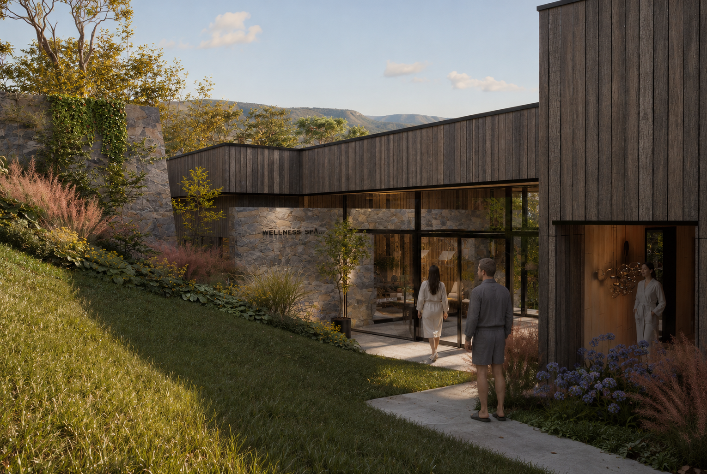
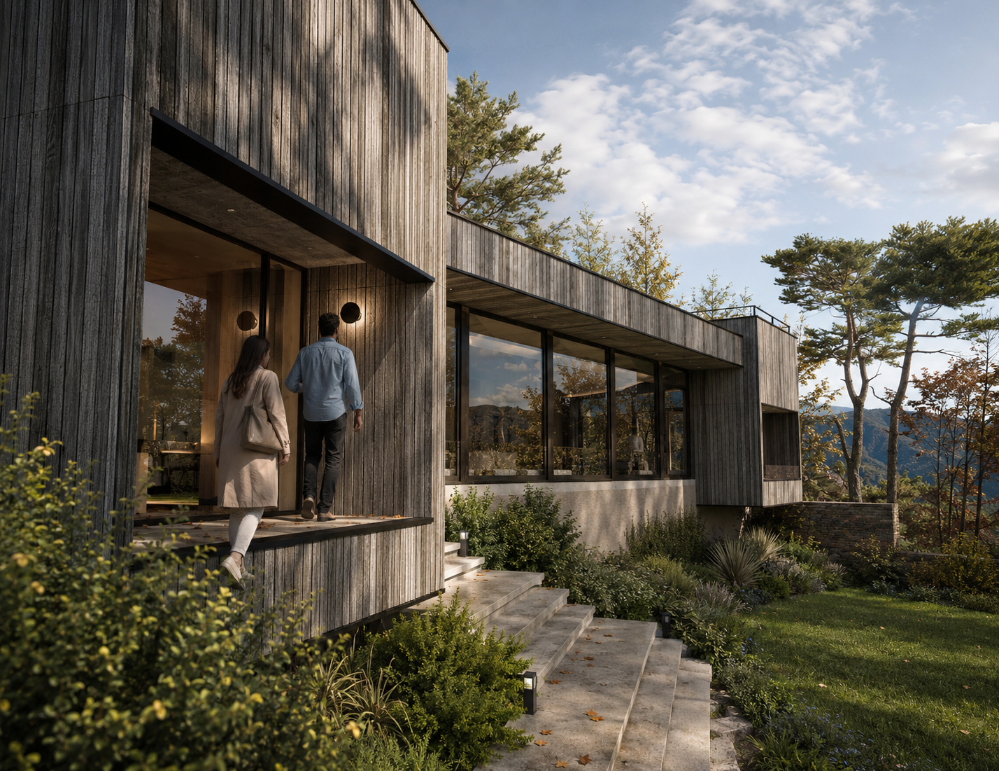
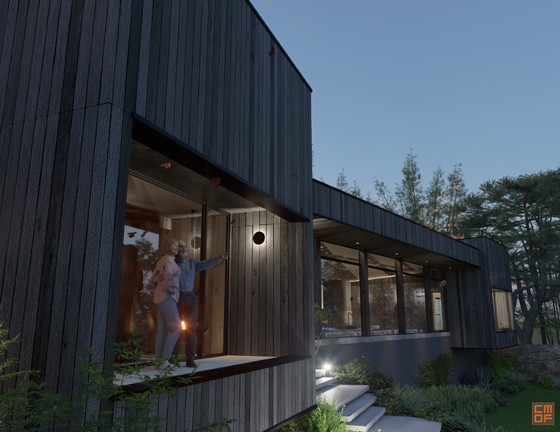

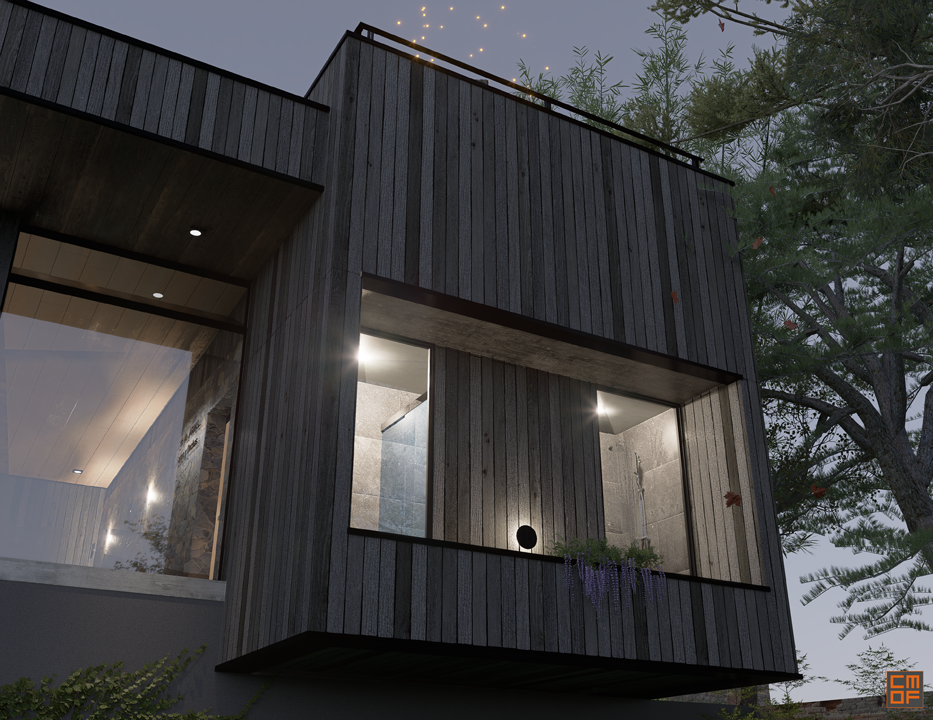
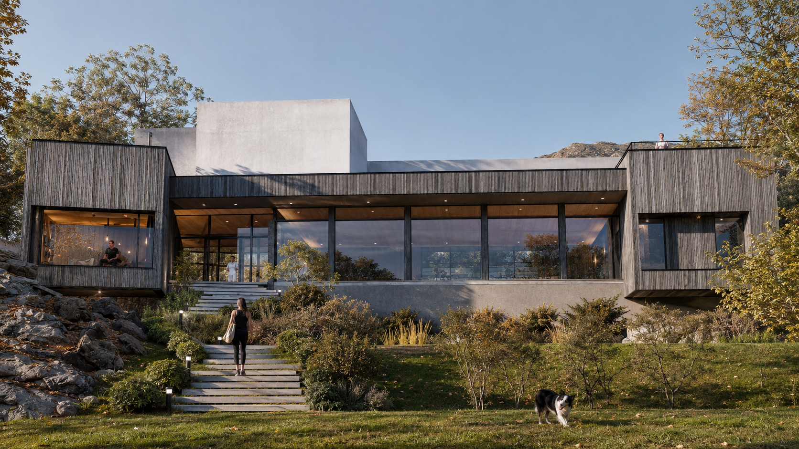
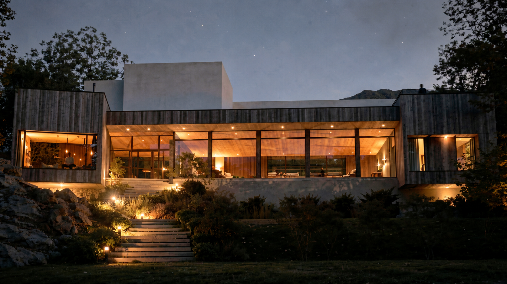
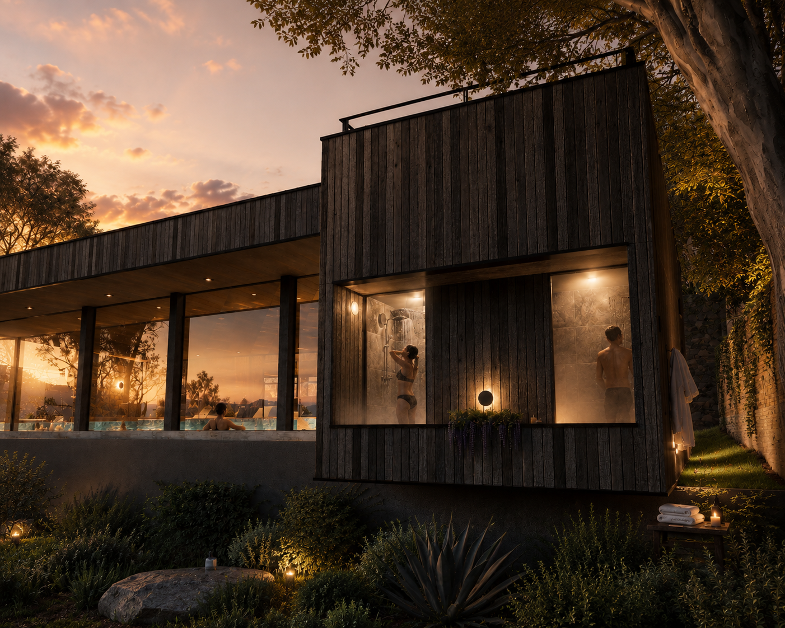
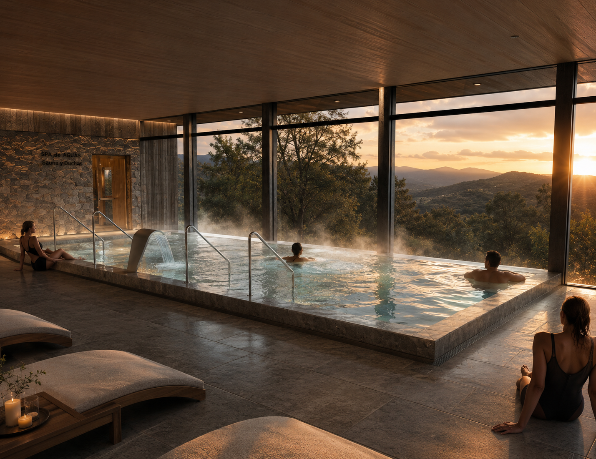
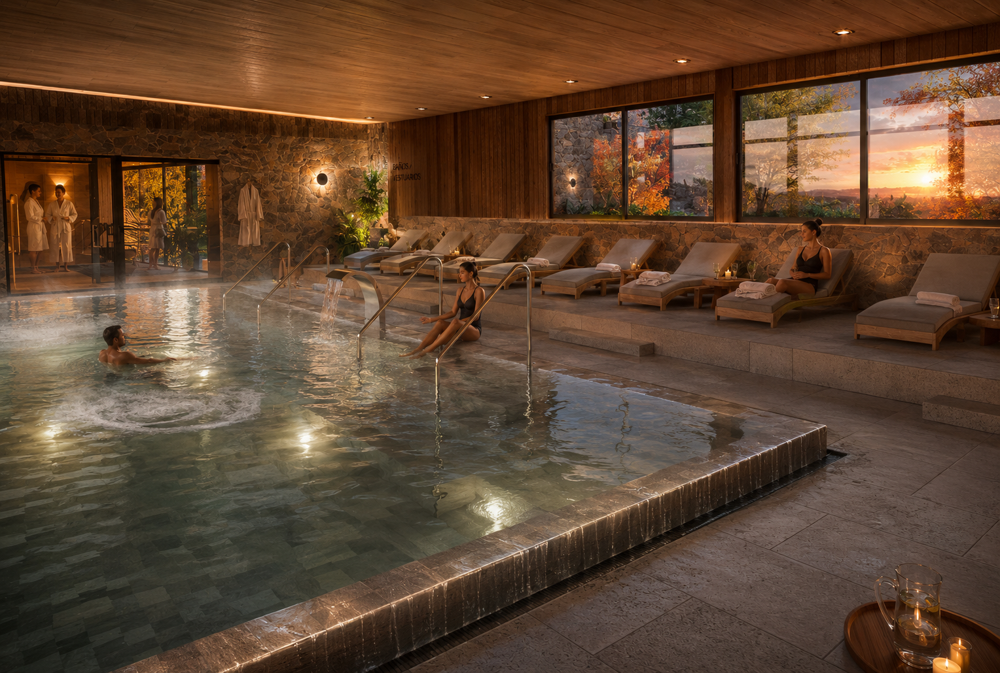
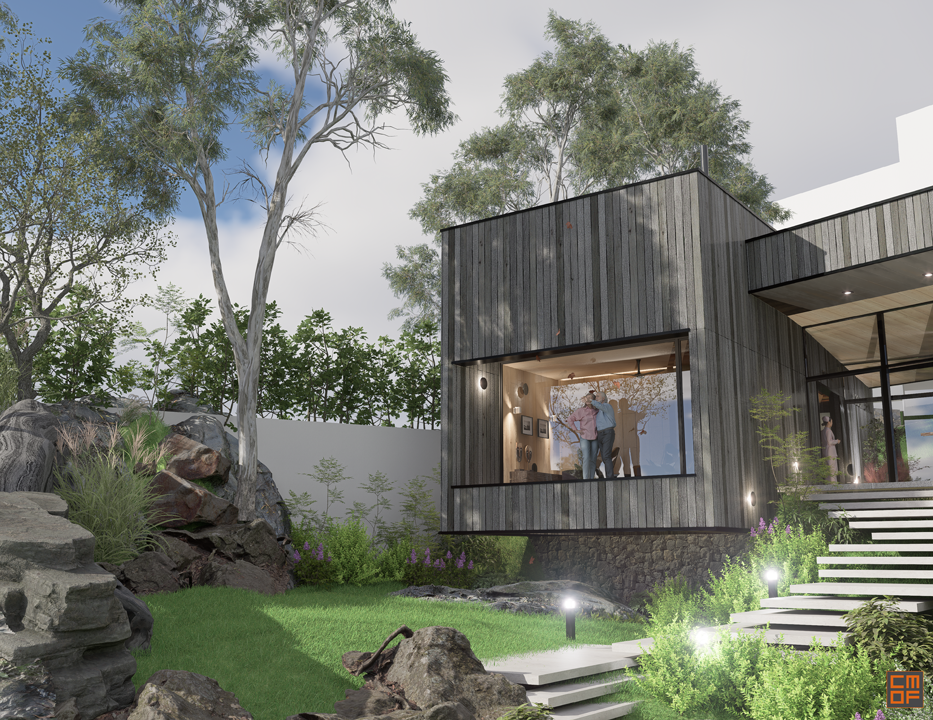
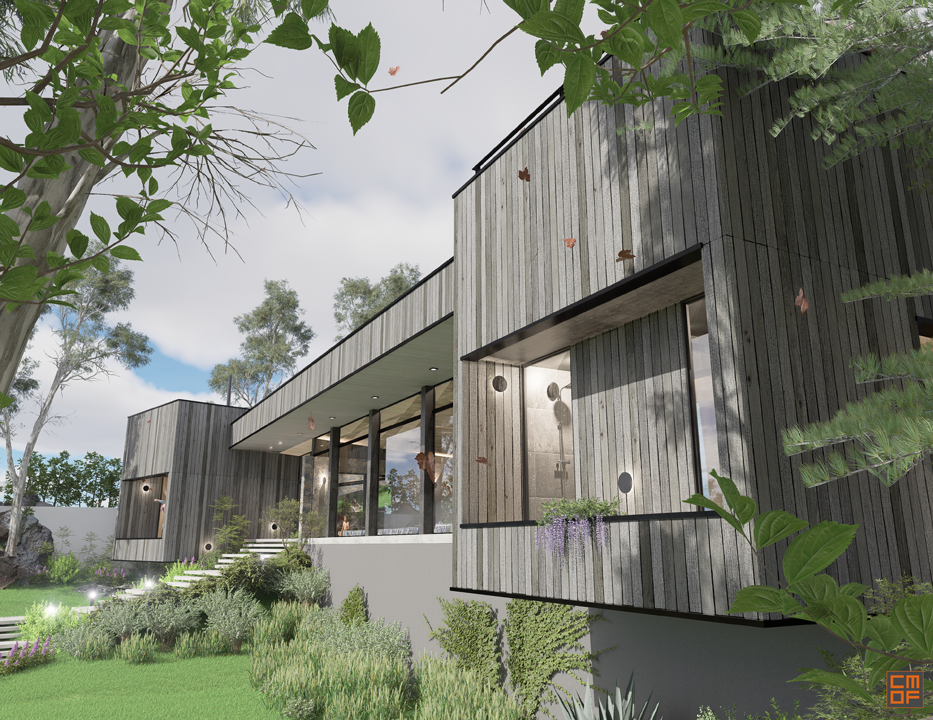

EL FARO Hotel – Spa & Wellness
Un destino de bienestar diseñado para transformar la estadía en una experiencia memorable.
El Spa & Wellness del Hotel EL FARO fue concebido como la pieza central de la estrategia de remodelación y reposicionamiento del hotel, entendiendo a la arquitectura como una herramienta para generar valor a través de la experiencia. Más que un conjunto de instalaciones de bienestar, el proyecto propone un recorrido cuidadosamente diseñado que fortalece el vínculo emocional del huésped con el lugar, convirtiendo el relax y el bienestar en uno de los recuerdos más significativos de su estadía.
La secuencia espacial guía al usuario a través de un circuito integral de bienestar que combina experiencias de agua, calor y relajación. El recorrido incluye una piscina climatizada con jets de hidromasaje, burbujas y cascadas, complementada por sauna seco, sauna húmedo, ducha escocesa, ducha de sensaciones, salas de masajes individuales y para parejas, culminando en una sala de relax concebida como el cierre del recorrido y el momento de mayor contemplación.
En todo el proyecto, la arquitectura, la iluminación, la materialidad y la percepción sensorial trabajan de manera integrada para crear una atmósfera de calma, confort y desconexión. Cada espacio fue diseñado para acompañar una transición gradual desde el ritmo cotidiano hacia un estado de bienestar físico y mental, reforzando la identidad del hotel a través de una experiencia inmersiva y cuidadosamente planificada.
Como parte de la remodelación integral y puesta en valor del emblemático Hotel EL FARO de Villa Carlos Paz, el spa aprovecha uno de los mayores atributos del edificio: sus excepcionales vistas panorámicas hacia las Sierras de Córdoba. La arquitectura enmarca el paisaje y convierte la cambiante luz natural —especialmente durante el atardecer— en un componente esencial de la experiencia, estableciendo un diálogo permanente entre bienestar, naturaleza y arquitectura.